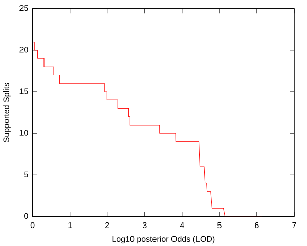
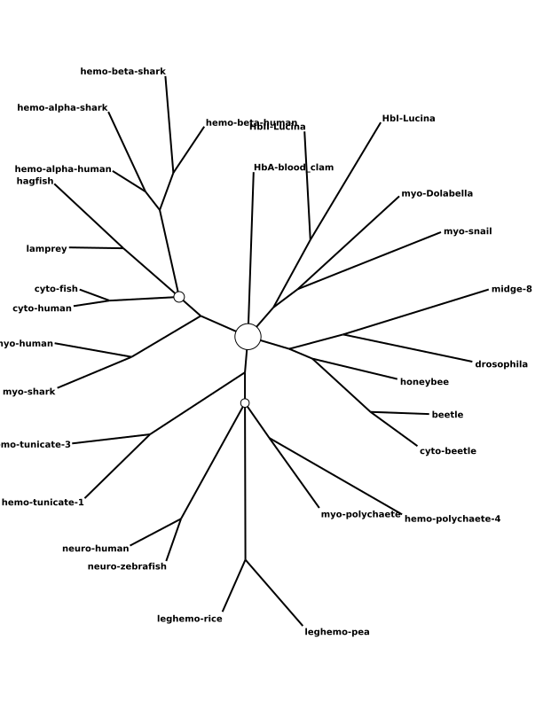
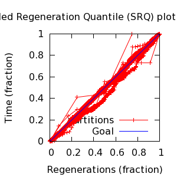
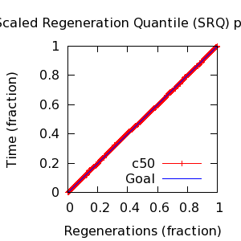
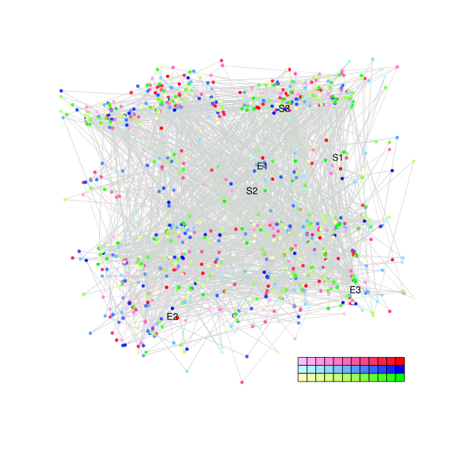
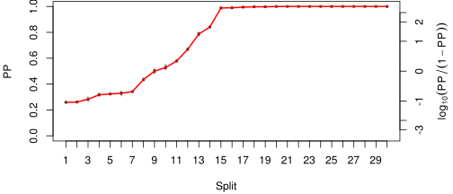
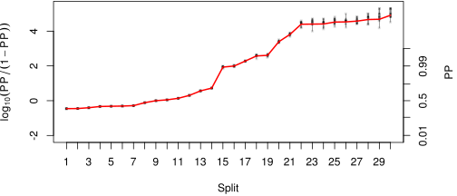

MCMC Post-hoc Analysis: 28 sequences
| Partition | Sequences | Lengths | Alphabet | Substitution Model | Indel Model | Scale Model |
|---|
| 1 |
few-globins.fasta |
141 - 190 |
Amino-Acids | LG+F[~DirichletOn[letters[A],1]] + Rates.Gamma[4,~logLaplace[-6,2]] + INV[~Uniform[0,1]] |
RS07[~Laplace[-4,0.707],Add[1,~Exponential[10]]] |
~ Gamma[0.5,2] |
| topology | ~ uniform on tree topologies |
| branch lengths | ~ iid[num_branches[T],Gamma[0.5,Div[2,num_branches[T]]]] |
command line: bali-phy few-globins.fasta -S LG+Rates.Gamma+INV
directory: /gpfs/fs0/data/wraycompute/br51/Work/3.0
| chain # | burnin | subsample | Iterations (remaining) | subdirectory |
|---|
| 1 |
20000 |
1 |
180000 |
few-globins-1 |
| 2 |
20000 |
1 |
180000 |
few-globins-3 |
| 3 |
20000 |
1 |
180000 |
few-globins-4 |
| 4 |
20000 |
1 |
180000 |
few-globins-5 |
| 5 |
20000 |
1 |
180000 |
few-globins-6 |
| 6 |
20000 |
1 |
180000 |
few-globins-7 |
| 7 |
20000 |
1 |
180000 |
few-globins-8 |
| P(data|M) = -9470.376 +- 0.162
|
Complete sample: 71166
topologies |
95% Bayesian credible interval: 29223 topologies |


| Partition support: Summary |
| Partition support graph: SVG |
Partition 1
|
|
|
Diff |
|
Min. %identity |
# Sites |
Constant |
Informative |
| Initial |
FASTA |
HTML |
Diff |
|
1.26% |
190 |
0 (0%) |
190 (100%) |
| Best (WPD) |
FASTA |
HTML |
|
AU |
8% |
358 |
2 (0.559%) |
229 (64%) |


- Partition uncertainty
- SRQ plot: partitions
- SRQ plot: c50
- Variation in split frequency estimates
| burnin (scalar) | ESS (scalar) | ESS (partition) | ASDSF | MSDSF | PSRF-CI80% | PSRF-RCF |
|---|
| 3760 | 2265 | 9520.427 | 0.003 | 0.012
| 1 | 1.004 |
Projection of RF distances for the first 3 chains 3D | Variation of split PPs across chains
 |
| Statistic | Median | 95% BCI | ACT | ESS | burnin | PSRF-CI80% | PSRF-RCF |
|---|
| prior |
-600.9 |
(-654.4, -552.5) |
64.41 |
19562 |
748
|
1 | 0.9974
|
| prior_A1 |
-688.6 |
(-739.5, -643.5) |
42.97 |
29323 |
506
|
1 | 0.9984
|
| likelihood |
-9437 |
(-9469, -9404) |
19.88 |
63381 |
278
|
1 | 0.9981
|
| logp |
-1.004e+04 |
(-1.008e+04, -9997) |
54.85 |
22970 |
1033
|
1 | 0.9968
|
| Heat.beta |
1 |
| | | | | |
| Scale[1] |
18.69 |
(13.47, 24.88) |
1.11 |
1135366 |
178
|
1 | 0.9985
|
| F:pi[A] |
0.1175 |
(0.1049, 0.1304) |
8.075 |
156040 |
465
|
0.9999 | 1.002
|
| F:pi[R] |
0.02772 |
(0.02177, 0.03406) |
8.551 |
147343 |
404
|
1 | 1.003
|
| F:pi[N] |
0.03785 |
(0.03112, 0.04499) |
8.587 |
146734 |
628
|
1 | 0.9994
|
| F:pi[D] |
0.05685 |
(0.04765, 0.06659) |
8.549 |
147385 |
375
|
1 | 0.9988
|
| F:pi[C] |
0.01394 |
(0.008852, 0.01974) |
8.087 |
155813 |
417
|
0.9999 | 1.004
|
| F:pi[Q] |
0.03321 |
(0.02708, 0.03953) |
8.029 |
156926 |
498
|
1 | 1
|
| F:pi[E] |
0.05946 |
(0.0505, 0.06873) |
8.757 |
143887 |
458
|
0.9999 | 0.9991
|
| F:pi[G] |
0.08582 |
(0.0727, 0.09938) |
8.884 |
141836 |
441
|
1 | 1.004
|
| F:pi[H] |
0.02695 |
(0.02094, 0.03348) |
8.177 |
154087 |
411
|
1 | 0.9977
|
| F:pi[I] |
0.03898 |
(0.03169, 0.0466) |
8.508 |
148100 |
374
|
0.9999 | 0.9949
|
| F:pi[L] |
0.08762 |
(0.07446, 0.1012) |
9.882 |
127504 |
434
|
1 | 1
|
| F:pi[K] |
0.07126 |
(0.06092, 0.08199) |
9.602 |
131219 |
417
|
1 | 0.9987
|
| F:pi[M] |
0.02379 |
(0.01847, 0.02956) |
8.217 |
153334 |
491
|
1 | 0.9977
|
| F:pi[F] |
0.04137 |
(0.03274, 0.05072) |
8.402 |
149973 |
655
|
0.9998 | 1.001
|
| F:pi[P] |
0.03839 |
(0.03024, 0.04712) |
8.433 |
149409 |
521
|
1 | 0.9949
|
| F:pi[S] |
0.07132 |
(0.06175, 0.08114) |
8.521 |
147879 |
362
|
1 | 0.9976
|
| F:pi[T] |
0.0541 |
(0.04588, 0.06252) |
8.055 |
156427 |
314
|
1 | 1
|
| F:pi[W] |
0.01075 |
(0.006171, 0.01608) |
7.846 |
160585 |
823
|
1 | 0.9958
|
| F:pi[Y] |
0.02416 |
(0.01793, 0.03098) |
8.089 |
155769 |
428
|
1 | 1.001
|
| F:pi[V] |
0.07642 |
(0.066, 0.08743) |
8.367 |
150589 |
623
|
0.9999 | 0.9975
|
| Rates.Gamma:alpha |
3.466 |
(2.47, 4.691) |
6.711 |
187745 |
153
|
1 | 1.002
|
| INV:pInv |
0.01724 |
(0.001736, 0.04092) |
4.065 |
309998 |
133
|
1 | 0.9974
|
| RS07:meanIndelLength |
3.862 |
(3.101, 4.762) |
9.502 |
132610 |
135
|
1 | 1.001
|
| RS07:logLambda |
-4.447 |
(-4.712, -4.191) |
3.334 |
377902 |
135
|
1 | 1.003
|
| |A1| |
347 |
(328, 367) |
556.3 |
2264 |
3760 |
0.9253 | 0.9768
|
| #indels1 |
84 |
(78, 92) |
40.1 |
31421 |
378 |
0.9 | 0.9984
|
| |indels1| |
301 |
(273, 332) |
32.18 |
39157 |
550 |
0.9673 | 0.9983
|
| #substs1 |
2043 |
(2021, 2063) |
197.1 |
6391 |
1361 |
0.9381 | 0.9884
|
| Scale1*|T| |
24.76 |
(22.36, 27.37) |
2.559 |
492378 |
152
|
1 | 0.9997
|
| |A| |
347 |
(328, 367) |
556.3 |
2264 |
3760 |
0.9253 | 0.9768
|
| #indels |
84 |
(78, 92) |
40.1 |
31421 |
378 |
0.9 | 0.9984
|
| |indels| |
301 |
(273, 332) |
32.18 |
39157 |
550 |
0.9673 | 0.9983
|
| #substs |
2043 |
(2021, 2063) |
197.1 |
6391 |
1361 |
0.9381 | 0.9884
|
| |T| |
1.326 |
(0.9605, 1.739) |
1.006 |
1252160 |
226
|
1 | 0.9991
|
{kind=link}
{kind=link}
{kind=link}
{kind=link}
{kind=link}
{kind=link}
{kind=link}
{kind=link}
{kind=link}
{kind=link}
{kind=link}
{kind=link}